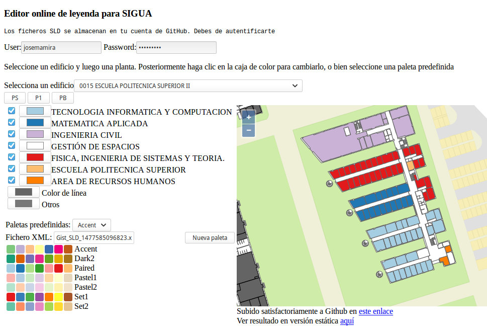

Editor SLD.
El protocolo WMS permite el uso de leyendas creadas en el estándar Styled Layer Definition (SLD), que en definitiva es un XML con TAGs específicos, que son utilizadas desde la request GETMAP vía POST o GET de un servicio WMS. Este estilo siempre está asociado a una LAYER y puede estar referido de dos formas: la primera, y menos adecuada, es adjuntando todo el contenido del SLD utilizando la variable SLD_BODY, pero hay que tener en cuenta que estos contenidos a veces superan el ancho máximo permitido en la URL, o bien tenemos problemas de codificación de caracteres (acentos, etc). La opción más recomendable es ubicar el fichero SLD en un servidor y llamar a su URL desde el parámetro SLD.
Lo interesante de esta aplicación que te estamos mostrando es que el editor de leyenda genera en tiempo real el fichero SLD y lo aloja como un GIST en tu repositorio de Github.
Este editor tiene las siguientes características
- No necesita un servidor para ejecutarse. Funciona en el cliente
- El usuario puede personalizar cada categoría con el color deseado. Utiliza el control input color que es un tag HTML5, por lo que se puede utilizar en casi todos los navegadores modernos
- Utiliza paletas de colores adecuadas para leyendas temáticas con datos cualitativos. Basado en los trabajos de la Dra. Cynthia Brewer
- Geo2UTM: Transforma una coordenada en Latitud y longitud con datum WGS84 en UTM del mismo datum. Se utiliza para definir el BBOX en un requerimiento WMS GETMAP
- Los ficheros generados se almacenan como Gist en tu repositorio de Github, por lo que siempre los puedes reutilizar. Son Gist de usuario, no públicos, por lo que es necesario autentificarse con usuario y contraseña.
- Permite discriminar (no visualizar) algunas categorías (actividades o departamentos)
- En función del número de elementos cualitativos se despliegan las sólo las paletas más adecuadas
- También se puede personalizar el color de la línea de los polígonos
Para poder realizar este editor se han utilizado los siguientes proyectos
- JQuery
- Chroma.js: Librería para manipular colores
- Geo2UTM: Transforma una coordenada en Latitud y longitud con datum WGS84 en UTM del mismo datum. Se utiliza para definir el BBOX en un requerimiento WMS GETMAP
- OpenLayers 3: Librería de mapas para visualizar on-line la leyenda
- LeafletJS: Librería de mapas muy ligera para visualizar on-line la leyenda
- API Rest de Sigua: Utiliza unos pocos métodos para listar edificios y obtener las plantas de cada uno de los edificios seleccionados
Editor de usos
Muy sencillo de utilizar. Sólo hay que indicar la paleta o personalizar los colores
Visor de estilos SLD
Aplicación web para visualizar en un mapa los ficheros generados con el editor
Editor de departamentos y actividades
Su funcionamiento no se aplica de forma global, sino a cada planta de un edificio, por tanto son necesario esos dos pasos, elegir edificio y luego la planta deseada. En función del número de departamentos se seleccionarán las paletas disponibles más adecuadas
Test con chroma.js
Algunas utilidades de uso de esta librería
